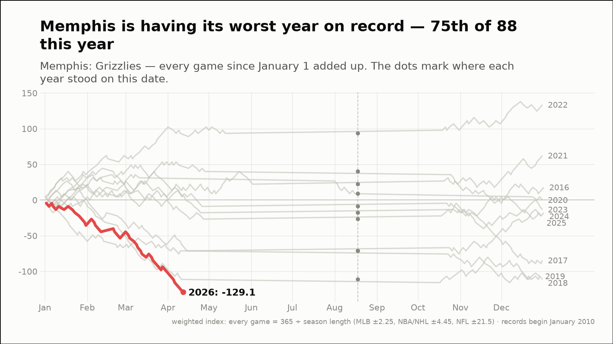
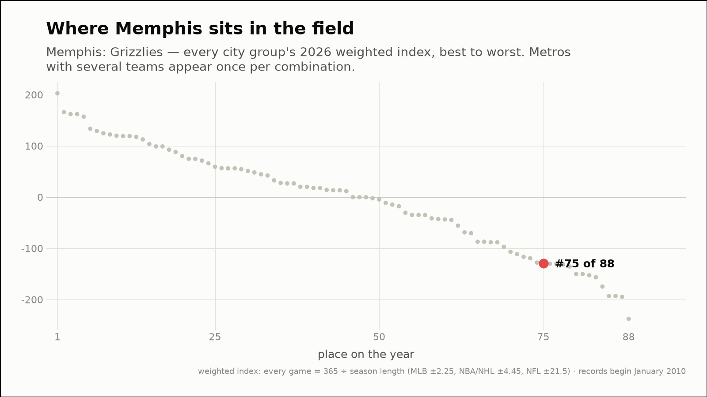
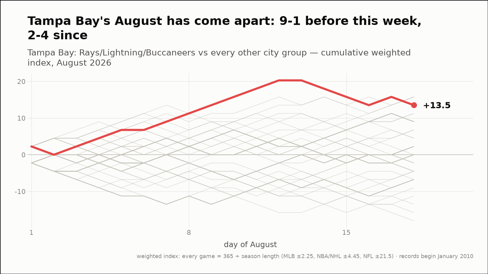
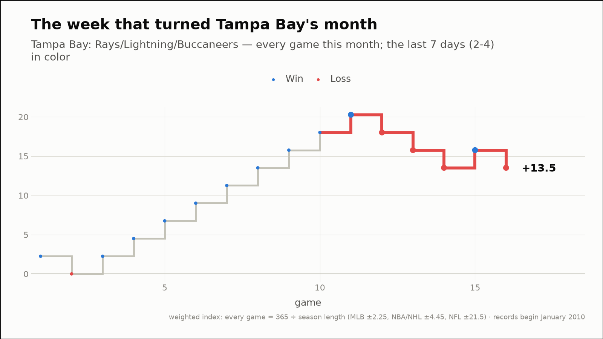
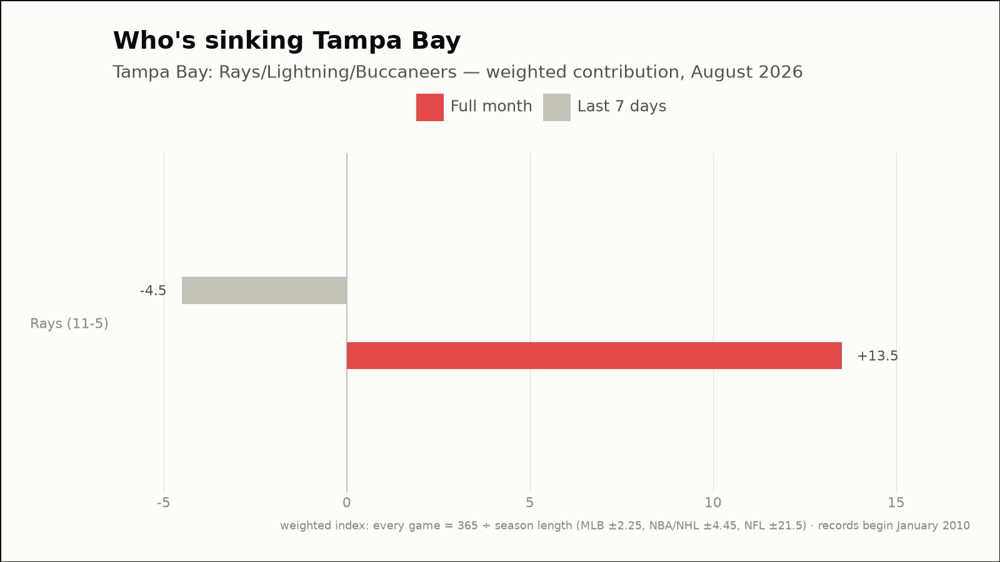
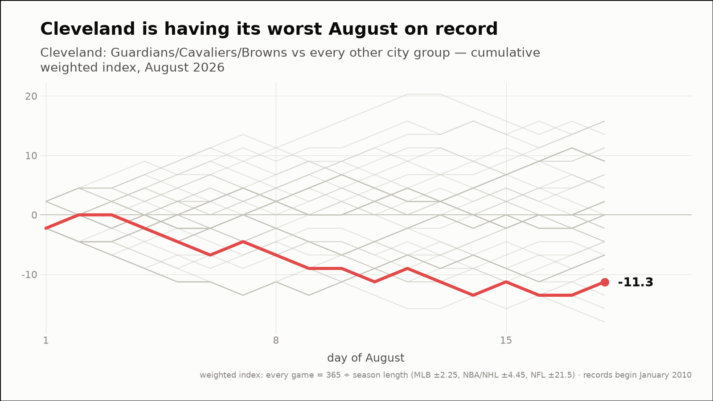
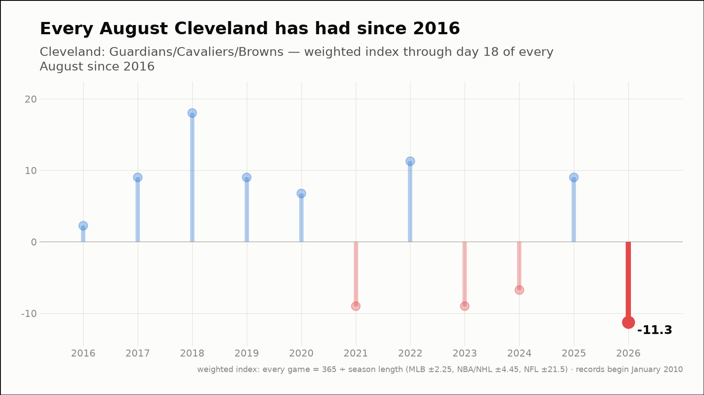
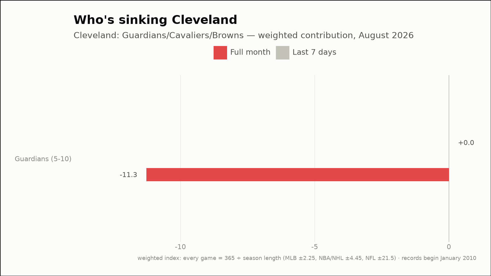

Out of the norm — three fandoms off their own script
The weekly hunt across all 88 city groups, through August 18, 2026
Memphis is having its worst year on record — 75th of 88 this year
Memphis: Grizzlies
- 2026 so far (through August 18)
- 10-39, -129.1 weighted — 1st-worst of the 11 years on record, at the same point
- Against the field
- 75th of 88 city groups on the year (15th percentile)


Tampa Bay's August has come apart: 9-1 before this week, 2-4 since
Tampa Bay: Rays/Lightning/Buccaneers
- Before this week
- 9-1, +18.0 weighted (+1.80 per game)
- Since
- 2-4, -4.5 weighted (-0.75 per game)
- This month (through August 18)
- 11-5, +13.5 weighted
- Last 7 days
- 2-4, -4.5 weighted
- Driving it this week
- Rays (2-4, -4.5)



Cleveland is having its worst August on record
Cleveland: Guardians/Cavaliers/Browns
- This month (through August 18)
- 5-10, -11.3 weighted — 1st-worst August of the 11 on record
- vs all months
- 32nd-worst of 114 months on record (28th percentile)
- Last 7 days
- 3-3, +0.0 weighted
- Driving it this week
- Guardians (3-3, +0.0)


